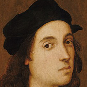

Artist Introduction
【哥德時期】
Cimabue
Duccio di Buoninsegna
Giotto di Bondone
【文藝復興盛期】
Michelangelo Buonarroti
Raphael

文藝復興畫聖。
拉斐爾是畫家，也是建築師，以羅馬梵諦岡的聖母像最為人所推崇。
作品特色是充分體現了安寧、和諧、協調、對稱及恬靜的秩序。
Click here to learn more
﹝拉斐爾﹞
Leonardo da Vinci
﹝達文西﹞
【表現主義】
Edvard Munch
﹝孟克﹞
Wassily Kandinsky
﹝康丁斯基﹞
Jackson Pollock
﹝波洛克﹞
【寫實主義】
Jean Francois Millet